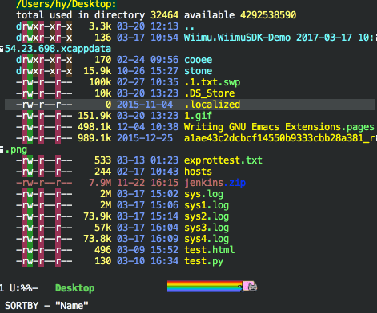
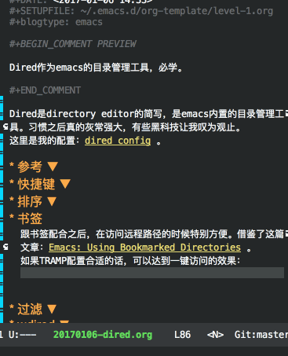
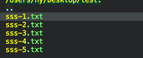
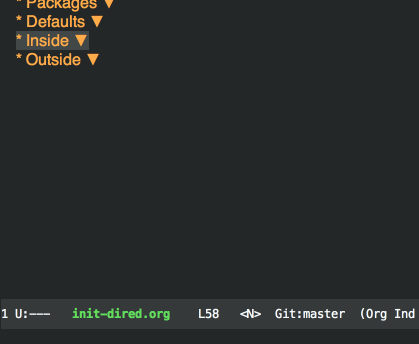
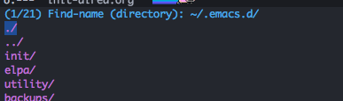
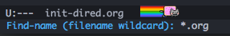
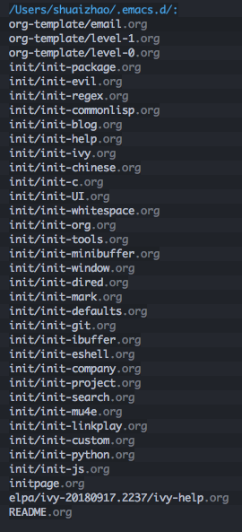

如何优雅的使用Dired
Dired是directory editor的简写，是emacs内置的目录管理工具。习惯之后真的灰常强大，有些黑科技让我叹为观止。
这里是我的配置：Dired config 。
为什么
- emacs内置，可以与文件编辑无缝操作。
- 在批量操作的时候很方便；正则、wdired很强大。
- dired的强大之处在于其打破了操作系统的树形结构。树形结构主要是对人更方便，但对于机器来说却没有那么重要。通过搜索找到所有符合条件的文件并进行操作是dired真正强大的地方。
当然，如果你不是emacser，这些都不是必要的条件；反之，这就是你的强大助手–就像emacs其他强大的特性一样，你需要花费时间去了解他们。
快捷键
首先要记一下一些常用的快捷键。
| key | function |
| ( | 显示、隐藏详细信息 |
| s | 排序 |
| q | 退出 |
| C, %C | copy |
| R, %R | 重命名 |
| d, %d | 添加删除标记 |
| D | 删除 |
| + | 创建路径 |
| Z | 压缩、解压缩文件 |
| o | 在另一个窗口打开 |
| m, %m | 标记, 例如\.org将会标记目录下所有org mode文件 |
| %g | 根据文件的内容是否包含正则标记文件 |
| u | 去除标记 |
| U | 去除所有标记 |
| ^ | 上一层目录 |
| *. | 标记所有后缀名为xx的文件 |
| V | 区域选择 |
| c | compress |
| t | 反向选择 |
| w | 拷贝文件名；在buffer的顶端有当前路径，也可以w |
| 0w | 拷贝文件路径 |
% 表示正则相关的操作，极大的增强了原命令的功能。
自定义快捷键
外部
key function dd/do 打开当前文件所在的目录/在另一个窗口打开 dr 打开最近访问的路径 df 打开Mac的Finder所打开的路径 dx 打开XCode工程所在的目录并且打开magit窗口 fx 打开XCode所编辑的文件 dm 打开书签所标记的路径 内部
key function O 以MacOS默认的行为打开文件 V 区域选择 e wdired H 忽略/显示mark的文件
Better defaults
单个buffer
dired默认情况下每个目录会单独开一个buffer，而这是我们所不希望看到的；有几种方法进行改变：
自己改
(setq dired-recursive-copies 'always) (setq dired-recursive-deletes 'always) (setq dired-dwim-target t) (put 'dired-find-alternate-file 'disabled nil) (with-eval-after-load 'dired (define-key dired-mode-map (kbd "RET") 'dired-find-alternate-file) (define-key dired-mode-map (kbd "^") (lambda () (interactive) (find-alternate-file "..")))) ; was dired-up-directory)
- dired-single
-
(diredp-toggle-find-file-reuse-dir 1)
拷贝
(setq dired-dwim-target t)
如果其他窗口也为dired mode，会以其为目标路径拷贝文件。
过滤
有些系统生成的文件我们并不希望看到，例如python的pyc文件，这时可以忽略：
(setq-default dired-omit-files-p t) (setq dired-omit-files (concat dired-omit-files "\\.pyc$"))
还可以跟mark结合进行暂时的忽略、显示：
(defun custom-dired-temp-hide-files () "Hide/show marked files temporary." (interactive) (if dired-omit-files-p (setq dired-omit-files-p nil) (progn (make-local-variable 'dired-omit-files) (dolist (item (dired-get-marked-files)) (setq dired-omit-files (concat dired-omit-files (format "\\|%s" (file-name-nondirectory item))))) (setq dired-omit-files-p t))) (dired-unmark-all-marks) (revert-buffer))
默认递归操作文件夹
(setq dired-recursive-copies 'always) (setq dired-recursive-deletes 'always)
排序
emacs原始的排序只有根据字符和modify time进行排序；有一个插件dired-sort 允许用户根据自己的需要进行排序。但是其中的根据后缀名排序只支持GNU版本的ls；所以对于MacOS及其他系统，最简单的方法是使用elisp版本的ls：
(require 'ls-lisp) (setq ls-lisp-use-insert-directory-program nil) (setq ls-lisp-verbosity nil)
并且，我希望文件夹能处在文件的前面：
(defun custom-dired-sort-dir-first () "Dired sort hook to list directories first." (save-excursion (let (buffer-read-only) (forward-line 2) ;; beyond dir. header (sort-regexp-fields t "^.*$" "[ ]*." (point) (point-max)))) (and (featurep 'xemacs) (fboundp 'dired-insert-set-properties) (dired-insert-set-properties (point-min) (point-max))) (set-buffer-modified-p nil)) (add-hook 'dired-after-readin-hook 'custom-dired-sort-dir-first)
这样，我们就可以自定义排序了，具体效果是这样的：

书签
跟书签配合之后，在访问远程路径的时候特别方便。借鉴了这篇文章：Emacs: Using Bookmarked Directories。
如果TRAMP配置合适的话，可以达到一键远程访问的效果：

wdired
这个功能就很黑魔法了。我把它绑定到了“E”，C-c C-c确认修改；C-c C-k放弃修改。这个功能允许用户像操作普通文件那样操作目录，例如批量重命名：

当操作不是很复杂的时候可以用正则来匹配操作，而当比较复杂的时候就可以用这个功能了，高效、强大。
最近访问
打开最近访问的目录是比较常用的一个功能。在shell里也有z、 fasd 这些快速打开路径的命令。而emacs内置的recentf则可为我们提供方便的最近访问路径功能，当然还是需要一些配置才能变得更好用。这里是wiki 。
对于这个问题我最初查到的答案在这里：陈斌的解决方案 。因此很简单的，我把其中fasd的部分去掉就可以用了：
(require 'ivy) ; swiper 7.0+ should be installed (defun custom-goto-recent-directory () "Open recent directory with dired" (interactive) (unless recentf-mode (recentf-mode 1)) (let ((collection (delete-dups (append (mapcar 'file-name-directory recentf-list))))) (ivy-read "directories:" collection :action 'dired)))
当然后来发现，这还是不够完美，因为有时我还是需要通过iterm、MacOS的Finder进行文件的操作，这些我也想能够实时的获取过来，于是变成了下面这样：
(defun slegetank/recent-directories () "Return recent access directories." (delete-dups (append (delq nil (mapcar (lambda (filename) ; recentf (let ((directory (file-name-directory filename))) (and (not (file-remote-p directory)) (file-exists-p directory) directory))) recentf-list)) (delq nil (mapcar (lambda (directory) ; finder recent (and (file-exists-p directory) (concat directory "/"))) (split-string (shell-command-to-string (format "python %s/init/osx-recent-dir.py" user-emacs-directory)) "\n" t))) (when (file-exists-p "~/.z") ; append lines from z; append top 20 dirs (mapcar (lambda (directory) (and (file-exists-p directory) (concat directory "/"))) (split-string (shell-command-to-string "cat ~/.z | sort -r -n -k 2 -t \"|\" | cut -f 1 -d \"|\" | head -n 20") "\n" t)))))) (defun custom-goto-recent-directory () "Open recent directory with dired; add z cmd & MacOS recent dir list to this" (interactive) (unless recentf-mode (recentf-mode 1)) (let ((collection (slegetank/recent-directories))) (ivy-read "directories:" collection :action 'dired)))
但是后来使用中发现了几个问题，在这里附上解决方案：
dired访问的路径并不会被添加到最近访问里
(defun recentd-track-opened-file () "Insert the name of the directory just opened into the recent list." (and (derived-mode-p 'dired-mode) default-directory (recentf-add-file default-directory)) ;; Must return nil because it is run from `write-file-functions'. nil) (defun recentd-track-closed-file () "Update the recent list when a dired buffer is killed. That is, remove a non kept dired from the recent list." (and (derived-mode-p 'dired-mode) default-directory (recentf-remove-if-non-kept default-directory))) (add-hook 'dired-after-readin-hook 'recentd-track-opened-file) (add-hook 'kill-buffer-hook 'recentd-track-closed-file)
使用org-publish发布静态博客时，生成的html路径会把recentf-list塞满
(defsubst file-was-visible-p (file) "Return non-nil if FILE's buffer exists and has been displayed." (let ((buf (find-buffer-visiting file))) (if buf (let ((display-count (buffer-local-value 'buffer-display-count buf))) (if (> display-count 0) display-count nil))))) (let ((r-list recentf-list)) (defsubst keep-default-old-and-visible-recentf-p (file) "Decide whether to keep file in recentf-list. Return non-nil if recentf would, by default, keep FILE, and either FILE name was loaded from recentf file on disk or FILE has been displayed in this session." (if (recentf-keep-default-predicate file) (or (member file r-list) (file-was-visible-p file))))) (setf recentf-keep '(keep-default-old-and-visible-recentf-p))
TRAMP访问时路径不会出现在recentf-list里
(require 'recentf) (setq recentf-auto-cleanup 'never) ;; disable before we start recentf! (recentf-mode 1)
我把它绑定到了dr上:

条件筛选
以这两个方法作为例子：find-grep-dired find-name-dired，分别是封装的find和grep命令，在结合dired（ls）。grep用的是正则，find用的是wildcard。这里以find-name-dired为例，列出~/.emacs.d下所有org文件。
M-x find-name-dired
此时，会有如下提示，输入要搜索的路径：

输入*.org，搜索所有org文件：

结果会以dired-mode展示出来，可以看到这平铺了树形结构，使得我们可以方便的对这些文件进行操作：

更进一步，假如是在一个很大的文件系统中，搜索非常耗时。此时我们可以将结果保存到一个文本文件中，大概这样：
/Users/shuaizhao/.emacs.d/: find . \( -iname \*.org \) -ls 1993857 8 -rw-r--r-- 1 shuaizhao staff 134 Nov 19 2017 org-template/email.org 1993859 8 -rw-r--r-- 1 shuaizhao staff 103 Nov 19 2017 org-template/level-1.org 1993858 8 -rw-r--r-- 1 shuaizhao staff 100 Nov 19 2017 org-template/level-0.org 66455846 32 -rw-r--r-- 1 shuaizhao staff 14169 Feb 13 10:11 init/init-package.org 66473986 16 -rw-r--r-- 1 shuaizhao staff 7139 Feb 13 13:37 init/init-evil.org 50835202 8 -rw-r--r-- 1 shuaizhao staff 278 Sep 24 14:13 init/init-regex.org 50835190 8 -rw-r--r-- 1 shuaizhao staff 3615 Sep 24 14:13 init/init-commonlisp.org 54122149 40 -rw-r--r-- 1 shuaizhao staff 19158 Oct 21 22:00 init/init-blog.org 32433335 16 -rw-r--r-- 1 shuaizhao staff 6559 May 20 2018 init/init-help.org 63648306 16 -rw-r--r-- 1 shuaizhao staff 6255 Jan 7 09:24 init/init-ivy.org 61226068 16 -rw-r--r-- 1 shuaizhao staff 5815 Dec 4 10:29 init/init-chinese.org 12124446 8 -rw-r--r-- 1 shuaizhao staff 1581 Jan 13 2018 init/init-c.org 62652381 8 -rw-r--r-- 1 shuaizhao staff 2441 Dec 23 13:26 init/init-UI.org 53945139 8 -rw-r--r-- 1 shuaizhao staff 1192 Oct 19 10:59 init/init-whitespace.org 62747687 24 -rw-r--r-- 1 shuaizhao staff 10530 Dec 25 09:22 init/init-org.org 15584059 8 -rw-r--r-- 1 shuaizhao staff 2591 Feb 4 2018 init/init-tools.org 50859975 8 -rw-r--r-- 1 shuaizhao staff 491 Sep 24 20:01 init/init-minibuffer.org 62220091 8 -rw-r--r-- 1 shuaizhao staff 2275 Dec 16 19:13 init/init-window.org 66474258 32 -rw-r--r-- 1 shuaizhao staff 13949 Feb 13 13:40 init/init-dired.org 64440168 8 -rw-r--r-- 1 shuaizhao staff 2493 Jan 17 10:16 init/init-mark.org 62145812 40 -rw-r--r-- 1 shuaizhao staff 19797 Dec 15 10:49 init/init-defaults.org 62219834 8 -rw-r--r-- 1 shuaizhao staff 3041 Dec 16 19:12 init/init-git.org 50835196 8 -rw-r--r-- 1 shuaizhao staff 1758 Sep 24 14:13 init/init-ibuffer.org 24027643 40 -rw-r--r-- 1 shuaizhao staff 17912 Apr 4 2018 init/init-eshell.org 50837497 8 -rw-r--r-- 1 shuaizhao staff 2873 Sep 24 14:36 init/init-company.org 62219812 24 -rw-r--r-- 1 shuaizhao staff 8702 Dec 16 19:11 init/init-project.org 50835203 16 -rw-r--r-- 1 shuaizhao staff 4153 Sep 24 14:13 init/init-search.org 62219681 56 -rw-r--r-- 1 shuaizhao staff 26338 Dec 16 19:10 init/init-mu4e.org 15364513 8 -rw-r--r-- 1 shuaizhao staff 1893 Feb 2 2018 init/init-linkplay.org 12126792 8 -rw-r--r-- 1 shuaizhao staff 386 Jan 13 2018 init/init-custom.org 63436546 8 -rw-r--r-- 1 shuaizhao staff 3861 Jan 3 16:55 init/init-python.org 50835198 24 -rw-r--r-- 1 shuaizhao staff 10604 Sep 24 14:13 init/init-js.org 1993855 8 -rw-r--r-- 1 shuaizhao staff 400 Nov 19 2017 initpage.org 50730938 16 -rw-r--r-- 1 shuaizhao staff 4893 Sep 24 12:37 elpa/ivy-20180917.2237/ivy-help.org 13425906 8 -rw-r--r-- 1 shuaizhao staff 297 Jan 17 2018 README.org find finished at Wed Feb 13 14:00:23
然后等需要操作的时候再用emacs打开，然后M-x virtual-dired进行加载。
参考
emacsist: Emacs文件管理神器–dired常用操作说明